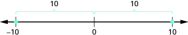
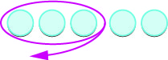

ઋણ અને વિરોધી સંખ્યાઓનો ઉપયોગ કરો
−4થી 4 સુધીની સંખ્યારેખા છે. 0ની ડાબી બાજુના કૌંસ નીચે ‘ઋણ સંખ્યાઓ’ અને જમણી બાજુના કૌંસ નીચે ‘ધન સંખ્યાઓ’ લખેલું છે. બંને કૌંસની વચ્ચે ‘શૂન્ય’ લખેલું છે અને તેનું તીર 0ને ચીંધે છે. શૂન્ય બંને વર્ગોથી અલગ છે.
સંખ્યારેખા −4થી 4 સુધી છે. રેખાની ઉપર એક તીર −1થી 4 તરફ જાય છે અને તેની પાસે “મોટી” લખ્યું છે. રેખાની નીચે એક તીર 1થી −4 તરફ જાય છે અને તેની પાસે “નાની” લખ્યું છે.

સંખ્યારેખા −4થી 4 સુધી છે. −4, −3, −2, −1, 0, 1, 2, 3 અને 4 પર બિંદુઓ દર્શાવેલાં છે.
ઉકેલ

સંખ્યારેખા −20થી 15 સુધી છે અને સંખ્યાઓ વચ્ચે નિશાન છે. દરેક પાંચમા નિશાને સંખ્યા લખેલી છે. −20, −4, −1, 2, 6, 9 અને 14 પર બિંદુઓ દર્શાવેલાં છે.
| ⓐ સંખ્યારેખા પર 14 એ 6ની જમણી બાજુએ છે. |
|
| ⓑ સંખ્યારેખા પર −1 એ 9ની ડાબી બાજુએ છે. |
|
| ⓒ સંખ્યારેખા પર −1 એ −4ની જમણી બાજુએ છે. |
|
| ⓓ સંખ્યારેખા પર 2 એ −20ની જમણી બાજુએ છે. |
ⓓ
ⓓ
વિરોધી સંખ્યા

સંખ્યારેખા −4થી 4 સુધી છે. રેખાની ઉપર બે કૌંસ છે. ડાબું કૌંસ −3થી 0 સુધી અને જમણું કૌંસ 0થી 3 સુધી છે. −3 અને 3 પર બિંદુઓ દર્શાવેલાં છે.
| બે સંખ્યાઓની વચ્ચે તે બાદબાકીની ક્રિયા દર્શાવે છે. આપણે ને “10 ઓછા 4” તરીકે વાંચીએ છીએ. |
|
| સંખ્યાની આગળ તે ઋણ સંખ્યા દર્શાવે છે. −8ને “ઋણ આઠ” તરીકે વાંચીએ છીએ. |
|
| ચલની આગળ તે વિરોધી સંખ્યા દર્શાવે છે. આપણે ને “ની વિરોધી સંખ્યા” તરીકે વાંચીએ છીએ. | |
| અહીં બે “−” ચિહ્નો છે. કૌંસની અંદરનું ચિહ્ન જણાવે છે કે સંખ્યા ઋણ 2 છે. કૌંસની બહારનું ચિહ્ન −2ની વિરોધી સંખ્યા લેવાનું કહે છે. આપણે ને “ઋણ બેની વિરોધી સંખ્યા” તરીકે વાંચીએ છીએ. |
વિરોધી સંખ્યાની સંકેતલિપિ
ઉકેલ
| ⓐ −7 એ 7 જેટલા જ અંતરે 0થી દૂર છે, પરંતુ 0ની બીજી બાજુએ છે. |  સંખ્યારેખા 0થી અંતર દર્શાવે છે. −7 અને 7 પર બિંદુઓ છે. ઉપરના કૌંસ બતાવે છે કે −7થી 0નું અંતર 7 એકમ છે અને 0થી 7નું અંતર પણ 7 એકમ છે. 7ની વિરોધી સંખ્યા −7 છે. |
| ⓑ 10 એ −10 જેટલા જ અંતરે 0થી દૂર છે, પરંતુ 0ની બીજી બાજુએ છે. |  સંખ્યારેખા પર −10, 0 અને 10 બિંદુઓ છે. કમાનો −10થી 0નું 10 એકમ અંતર અને 0થી 10નું બીજા 10 એકમનું અંતર દર્શાવે છે. −10ની વિરોધી સંખ્યા 10 છે. |
| ⓒ −(−6) (−6ની વિરોધી સંખ્યા). |  નિરપેક્ષ મૂલ્ય દર્શાવતી સંખ્યારેખા પર −6, 0 અને 6 બિંદુઓ છે. 0થી −6નું અંતર 6 છે અને 0થી 6નું અંતર પણ 6 છે. −6ની વિરોધી સંખ્યા 6 છે. |
પૂર્ણાંકો
ઉકેલ
- ⓐ
જ્યારે = હોય ત્યારે કિંમત શોધવાનો અર્થ ની જગ્યાએ મૂકવો થાય છે.
ચિત્ર જણાવે છે કે x = 8 હોય ત્યારે પદાવલીની કિંમત શોધવી એટલે ચલ xની જગ્યાએ 8 મૂકવો.
−x ની જગ્યાએ મૂકો.
સફેદ પૃષ્ઠભૂમિ પર “xની જગ્યાએ 8 મૂકો” સૂચના છે.

સફેદ પૃષ્ઠભૂમિ પર પદાવલી −(8) છે. માત્ર 8 લાલ રંગમાં છે; ઋણ ચિહ્ન અને બંને ગોળ કૌંસ કાળા રંગમાં છે.
8ની વિરોધી સંખ્યા લખો. 
ચિત્રમાં −8 છે. 8ની આગળ આડી ઋણ-નિશાની છે; 8નો અંક ઉપરનીચેના બે બંધ વળાંકોવાળા સાદા ફોન્ટમાં છે.
- ⓑ
જ્યારે = હોય ત્યારે કિંમત શોધવાનો અર્થ ની જગ્યાએ મૂકવો થાય છે.
મૂળ ચિત્રમાં ‘x = −8 હોય ત્યારે −xની જગ્યાએ −8 મૂકો’ લખેલું છે; આ સૂચનામાં ભૂલ છે. સાચી સૂચના: xની જગ્યાએ −8 મૂકો, જેથી −x = −(−8) = 8 થાય. ચિત્રમાં −8 લાલ રંગમાં છે.
−x ની જગ્યાએ મૂકો.
ચિત્રમાં “xની જગ્યાએ −8 મૂકો” સૂચના છે. લખાણ રાખોડી છે અને −8 લાલ છે.

પદાવલી −(−8)માં કૌંસની અંદરનું ઋણ-ચિહ્ન અને 8 લાલ રંગમાં છે. પૃષ્ઠભૂમિ સફેદ છે.
−8ની વિરોધી સંખ્યા લખો. 8
નિરપેક્ષ મૂલ્યવાળી પદાવલીઓને સરળ બનાવો
નિરપેક્ષ મૂલ્ય
- એકમ દૂર છે, જો અંતર અહીંથી માપીએ: તેથી
- એકમ દૂર છે, જો અંતર અહીંથી માપીએ: તેથી
−5થી 5 સુધીની સંખ્યારેખા દર્શાવેલી છે. −5થી 0 સુધીના બિંદુઓની ઉપરના કૌંસ પર ‘5 એકમ’ લખેલું છે. તેની ઉપરના તીર પાસે ‘−5 એ 0થી 5 એકમ દૂર છે, તેથી −5નું નિરપેક્ષ મૂલ્ય 5 છે’ લખેલું છે. 0થી 5 સુધીના બિંદુઓની ઉપરના કૌંસ પર પણ ‘5 એકમ’ લખેલું છે. તેની ઉપરના તીર પાસે ‘5 એ 0થી 5 એકમ દૂર છે, તેથી 5નું નિરપેક્ષ મૂલ્ય 5 છે’ લખેલું છે.
નિરપેક્ષ મૂલ્યનો ગુણધર્મ
ઉકેલ
ⓑ
ⓒ
ઉકેલ
|
ⓐ
સરળ બનાવો. તુલના કરો. |
|
|
ⓑ
સરળ બનાવો. તુલના કરો. |
|
|
ⓒ
સરળ બનાવો. તુલના કરો. |
|
|
ⓓ
સરળ બનાવો. તુલના કરો. |
ⓓ
ⓒ ⓓ
સમૂહ દર્શાવતાં ચિહ્નો
ઉકેલ
| પહેલાં ગોળ કૌંસની અંદરની ક્રિયા કરો: 6માંથી 2 બાદ કરો. | |
| 3(4)નો ગુણાકાર કરો. | |
| નિરપેક્ષ મૂલ્યની ઊભી રેખાઓની અંદર બાદબાકી કરો. | |
| નિરપેક્ષ મૂલ્ય લો. | |
| બાદબાકી કરો. |
ઉકેલ
ની જગ્યાએ મૂકો. ચિત્રમાં ‘xની જગ્યાએ −35 મૂકો’ સૂચના છે. −35 લાલ રંગમાં અને બાકીનું લખાણ કાળા રંગમાં છે. આ સૂચનાનો અર્થ ચલ xની જગ્યાએ −35 મૂકવો એવો છે. |
ચિત્રમાં ઋણ પાંત્રીસનું નિરપેક્ષ મૂલ્ય દર્શાવતું ગાણિતિક લખાણ |−35| છે. |
| નિરપેક્ષ મૂલ્ય લો. | 35 |
ⓑ
ની જગ્યાએ મૂકો. yની જગ્યાએ −20 મૂકો. |
 પદાવલી |−(−20)| છે. ગોળ કૌંસની અંદરનું −20 લાલ રંગમાં છે. કૌંસની બહારનું ઋણ ચિહ્ન નિરપેક્ષ મૂલ્યની ઊભી રેખાઓની અંદર છે અને કાળા રંગમાં છે. |
| સરળ બનાવો. | |
| નિરપેક્ષ મૂલ્ય લો. | 20 |
ⓒ
ની જગ્યાએ મૂકો. સફેદ પૃષ્ઠભૂમિ પર ‘uની જગ્યાએ 12 મૂકો’ સૂચના છે. 12 લાલ રંગમાં અને બાકીનું લખાણ કાળા રંગમાં છે. |
 પદાવલી −|12| છે. 12 લાલ રંગમાં છે; ઊભી રેખાઓની બહારનું ઋણ ચિહ્ન કાળા રંગમાં છે. પદાવલીની કિંમત −12 થાય છે. |
| નિરપેક્ષ મૂલ્ય લો. |
ⓓ
ની જગ્યાએ મૂકો. pની જગ્યાએ −14 મૂકો. |
સફેદ પૃષ્ઠભૂમિ પર પદાવલી −|−14| છે. ઊભી રેખાઓની અંદરનું −14 લાલ રંગમાં અને બહારનું ઋણ ચિહ્ન કાળા રંગમાં છે. |
| નિરપેક્ષ મૂલ્ય લો. |
પૂર્ણાંકોનો સરવાળો કરો

ચિત્રમાં એક વાદળી ચકતીની નીચે એક લાલ ચકતી છે અને બંનેની આસપાસ વર્તુળ છે. જમણી બાજુનું સમીકરણ 1 + (−1) = 0 છે.
| શરૂઆતમાં આપણી પાસે 5 ધન ચકતીઓ છે. | આછા વાદળી રંગનાં પાંચ વર્તુળો આડી હરોળમાં છે. તેમની નીચે 5 લખેલું છે, જે પાંચની સંખ્યા દર્શાવે છે. |
| પછી 3 ધન ચકતીઓ ઉમેરીએ છીએ. |  આછા વાદળી રંગનાં વર્તુળોનાં બે જૂથ છે. પહેલા જૂથમાં પાંચ વર્તુળો અને બીજા જૂથમાં ત્રણ વર્તુળો છે. દરેક જૂથની નીચે તેની સંખ્યા લખેલી છે. |
| હવે આપણી પાસે 8 ધન ચકતીઓ છે. 5 અને 3નો સરવાળો 8 છે. | 8 ધન ચકતીઓ આછા વાદળી રંગનાં આઠ વર્તુળો આડી હરોળમાં છે. નીચે વચ્ચે ‘8 ધન ચકતીઓ’ લખેલું છે. |
| શરૂઆતમાં આપણી પાસે 5 ઋણ ચકતીઓ છે. |  પાંચ લાલ વર્તુળો આડી હરોળમાં છે. તેમની નીચે વચ્ચે −5 લખેલું છે, જે ઋણ પાંચ દર્શાવે છે. |
| પછી 3 ઋણ ચકતીઓ ઉમેરીએ છીએ. |  લાલ વર્તુળોનાં બે જૂથ છે. પહેલા જૂથનાં પાંચ વર્તુળોની નીચે −5 અને બીજા જૂથનાં ત્રણ વર્તુળોની નીચે −3 લખેલું છે. આ જૂથો ઋણ સંખ્યાઓ દર્શાવે છે. |
| હવે આપણી પાસે 8 ઋણ ચકતીઓ છે. −5 અને −3નો સરવાળો −8 છે. | 8 ઋણ ચકતીઓ આઠ લાલ વર્તુળો આડી હરોળમાં છે. નીચે વચ્ચે ‘8 ઋણ ચકતીઓ’ લખેલું છે. |
- પહેલા ઉદાહરણમાં 5 ધન ચકતીઓ અને 3 ધન ચકતીઓ ઉમેરી છે—બંને ધન છે.
- બીજા ઉદાહરણમાં 5 ઋણ ચકતીઓ અને 3 ઋણ ચકતીઓ ઉમેરી છે—બંને ઋણ છે.
8 ધન ચકતીઓ
8 ઋણ ચકતીઓ
આકૃતિ બે સ્તંભમાં વહેંચાયેલી છે. ડાબા સ્તંભમાં આઠ વાદળી ચકતીઓ આડી હરોળમાં છે. તેમની નીચે ‘8 ધન ચકતીઓ’ અને પછી 5 + 3 = 8 સમીકરણ છે. જમણા સ્તંભમાં આઠ લાલ ચકતીઓ છે. તેમની નીચે ‘8 ઋણ ચકતીઓ’ અને પછી −5 + (−3) = −8 સમીકરણ છે.
ઉકેલ
 આડી હરોળમાં પાંચ આછા વાદળી વર્તુળો 1 અને 4નો સરવાળો દર્શાવે છે. બાજુમાં 1 + 4 અને 5 લખેલું છે. |
| 1 ધન ચકતી અને 4 ધન ચકતીઓ મળીને 5 ધન ચકતીઓ થાય છે. |
 પાંચ લાલ વર્તુળો −1 અને −4નો સરવાળો −5 થાય છે તે દર્શાવે છે. આ ઋણ સંખ્યાઓના સરવાળાનું નિરૂપણ છે. |
| 1 ઋણ ચકતી અને 4 ઋણ ચકતીઓ મળીને 5 ઋણ ચકતીઓ થાય છે. |
| −5 + 3 એટલે −5 અને 3નો સરવાળો. | |
| શરૂઆતમાં આપણી પાસે 5 ઋણ ચકતીઓ છે. |  સફેદ પૃષ્ઠભૂમિ પર પાંચ લાલ અંડાકાર આકૃતિઓ આડી હરોળમાં છે; તે ગોળીઓ અથવા મણકાની હરોળ જેવી દેખાય છે. |
| પછી 3 ધન ચકતીઓ ઉમેરીએ છીએ. |  સફેદ પૃષ્ઠભૂમિ પર પાંચ લાલ વર્તુળોની આડી હરોળની નીચે ત્રણ આછા વાદળી વર્તુળોની આડી હરોળ છે. |
| શૂન્ય બનાવતી જોડીઓ દૂર કરીએ છીએ. |  ત્રણ જાંબલી અંડાકાર આકૃતિઓ એક હરોળમાં છે. દરેકમાં એક નારંગી અને એક આછું વાદળી વર્તુળ છે. જમણે બે નારંગી વર્તુળો અલગ છે. |
| 2 ઋણ ચકતીઓ બાકી છે. | 2 ઋણ ચકતીઓ સફેદ પૃષ્ઠભૂમિ પર બે લાલ વર્તુળોની નીચે ‘2 ઋણ ચકતીઓ’ લખેલું છે; તે ઋણ મૂલ્યો દર્શાવે છે. |
| −5 અને 3નો સરવાળો −2 છે. | −5 + 3 = −2 |
| 5 + (−3) એટલે 5 અને −3નો સરવાળો. | |
| શરૂઆતમાં આપણી પાસે 5 ધન ચકતીઓ છે. | પાંચ આછા વાદળી, અર્ધપારદર્શક અંડાકાર આકારો સફેદ પૃષ્ઠભૂમિ પર વ્યવસ્થિત હરોળમાં છે; તે પાણીનાં ટીપાં અથવા પરપોટા જેવા દેખાય છે. |
| પછી 3 ઋણ ચકતીઓ ઉમેરીએ છીએ. |  સફેદ પૃષ્ઠભૂમિ પર આઠ વર્તુળો બે હરોળમાં છે. ઉપરની હરોળમાં પાંચ આછા વાદળી વર્તુળો અને નીચેની હરોળમાં ત્રણ લાલ વર્તુળો છે. |
| શૂન્ય બનાવતી જોડીઓ દૂર કરીએ છીએ. |  ત્રણ જોડીઓમાં દરેક જોડીનું એક આછું વાદળી અને એક નારંગી વર્તુળ જાંબલી અંડાકારમાં બંધ છે. બાજુમાં બે આછા વાદળી વર્તુળો અલગ છે. |
| 2 ધન ચકતીઓ બાકી છે. | 2 ધન ચકતીઓ બે આછા વાદળી વર્તુળોની નીચે ‘2 ધન ચકતીઓ’ લખેલું છે, જે બે ધન પરિણામો અથવા વસ્તુઓ દર્શાવે છે. |
| 5 અને −3નો સરવાળો 2 છે. | 5 + (−3) = 2 |
ઋણ ચકતીઓ વધુ છે—સરવાળો ઋણ છે.
ધન ચકતીઓ વધુ છે—સરવાળો ધન છે.
નામનિર્દેશ સાથે બે ચિત્રો છે. ડાબે પાંચ લાલ ચકતીઓની હરોળની નીચે ત્રણ વાદળી ચકતીઓ છે; પહેલી ત્રણ લાલ-વાદળી જોડીઓની આસપાસ વર્તુળો છે. ઉપર ‘−5 + 3’ અને નીચે ‘ઋણ ચકતીઓ વધુ—સરવાળો ઋણ’ લખેલું છે. જમણે પાંચ વાદળી ચકતીઓની હરોળની નીચે ત્રણ લાલ ચકતીઓ છે; પહેલી ત્રણ વાદળી-લાલ જોડીઓની આસપાસ વર્તુળો છે. ઉપર ‘5 + (−3)’ અને નીચે ‘ધન ચકતીઓ વધુ—સરવાળો ધન’ લખેલું છે.
ઉકેલ
| −1 + 5 | |
 સફેદ પૃષ્ઠભૂમિ પર એક લાલ અને એક વાદળી વર્તુળ જાંબલી અંડાકારમાં બંધ છે. તેની જમણે બીજાં ચાર વાદળી વર્તુળો એક હરોળમાં છે. |
|
| ધન ચકતીઓ વધુ છે, તેથી સરવાળો ધન છે. | 4 |
ⓑ
| 1 + (−5) | |
 એક વાદળી અને એક લાલ વર્તુળ જાંબલી અંડાકારમાં બંધ છે. તેની બાજુમાં બીજાં ચાર લાલ વર્તુળો આડી હરોળમાં છે. |
|
| ઋણ ચકતીઓ વધુ છે, તેથી સરવાળો ઋણ છે. | −4 |
ધન અને ઋણ પૂર્ણાંકોનો સરવાળો
ઉકેલ
- ⓐ ચિહ્નો જુદાં હોવાથી આપણે બાદ કરીએ છીએ: ધન કરતાં ઋણ ચકતીઓ વધુ હોવાથી જવાબ ઋણ આવશે.
- ⓑ ચિહ્નો સમાન હોવાથી આપણે સરવાળો કરીએ છીએ. માત્ર ઋણ ચકતીઓ હોવાથી જવાબ ઋણ આવશે.
ઉકેલ
| ગોળ કૌંસની અંદરની પદાવલી સરળ બનાવો. | |
| ગુણાકાર કરો. | |
| ડાબેથી જમણે સરવાળો કરો. |
પૂર્ણાંકોની બાદબાકી કરો
| શરૂઆતમાં આપણી પાસે 5 ધન ચકતીઓ છે. |  સફેદ પૃષ્ઠભૂમિ પર પાંચ આછા વાદળી, અંડાકાર ગોળી જેવા આકારો આડા ગોઠવેલા છે, જે એક સરળ અમૂર્ત ભાત અથવા નિરૂપણ દર્શાવે છે. |
| 3 ધન ચકતીઓ દૂર કરીએ છીએ. |  પાંચ આછા વાદળી વર્તુળોની હરોળમાંનાં પ્રથમ ત્રણની આસપાસ ગુલાબી-જાંબલી અંડાકાર અને ડાબી તરફનું તીર છે. |
| 2 ધન ચકતીઓ બાકી છે. | |
| 5 અને 3નો તફાવત 2 છે. | 2 |
| શરૂઆતમાં આપણી પાસે 5 ઋણ ચકતીઓ છે. | સફેદ પૃષ્ઠભૂમિ પર પાંચ સમાન લાલ-નારંગી અંડાકાર આકારો આડી હરોળમાં છે; તે મણકા અથવા ખંડ જેવા હોઈ શકે છે. |
| 3 ઋણ ચકતીઓ દૂર કરીએ છીએ. |  પાંચ નારંગી વર્તુળોની હરોળમાંનાં પ્રથમ ત્રણની આસપાસ જાંબલી અંડાકાર અને તીર છે. આ પાંચ વસ્તુઓમાંથી ત્રણ વસ્તુઓ ગણવાનું અથવા જુથમાં લેવાનું દર્શાવે છે. |
| 2 ઋણ ચકતીઓ બાકી છે. | |
| −5 અને −3નો તફાવત −2 છે. | −2 |

નામનિર્દેશ સાથે બે ચિત્રો છે. પહેલા ચિત્રમાં પાંચ વાદળી ચકતીઓમાંથી ત્રણની આસપાસ તીરવાળું વર્તુળ છે. ઉપર 5 − 3 = 2 સમીકરણ છે. બીજા ચિત્રમાં પાંચ લાલ ચકતીઓમાંથી ત્રણની આસપાસ તીરવાળું વર્તુળ છે. ઉપર −5 − (−3) = −2 સમીકરણ છે.
ઉકેલ
| ⓐ 7 ધન ચકતીઓમાંથી 5 ધન ચકતીઓ દૂર કરતાં 2 ધન ચકતીઓ મળે છે. |
|
| ⓑ 7 ઋણ ચકતીઓમાંથી 5 ઋણ ચકતીઓ દૂર કરતાં 2 ઋણ ચકતીઓ મળે છે. |
- બાદબાકી કરવા માટે, તેને આ રીતે ફરી કહીએ: માંથી 3 દૂર કરો.
| −5 − 3 એટલે −5માંથી 3 દૂર કરો. | |
| શરૂઆતમાં આપણી પાસે 5 ઋણ ચકતીઓ છે. |  પાંચ લાલ વર્તુળો −5 દર્શાવે છે; તે ઋણ પૂર્ણાંકનું નિરૂપણ છે. |
| હવે 3 ધન ચકતીઓ મેળવવા જરૂરી શૂન્ય બનાવતી જોડીઓ ઉમેરીએ છીએ. |  સફેદ પૃષ્ઠભૂમિ પર આઠ લાલ વર્તુળો છે—પહેલાં પાંચ, પછી થોડા અંતરે ત્રણ. છેલ્લાં ત્રણ લાલ વર્તુળોની નીચે ત્રણ વાદળી વર્તુળો છે. |
| 3 ધન ચકતીઓ દૂર કરીએ છીએ. |  આઠ લાલ વર્તુળો બે જૂથમાં છે—પહેલાં પાંચ, પછી ત્રણ. બીજા જૂથની નીચે ત્રણ આછા વાદળી વર્તુળો છે; તેમની આસપાસ જાંબલી અંડાકાર અને ડાબી તરફનું તીર છે. |
| 8 ઋણ ચકતીઓ બાકી રહે છે. | 8 ઋણ ચકતીઓ આઠ લાલ વર્તુળો આડી હરોળમાં છે. નીચે ‘8 ઋણ ચકતીઓ’ લખેલું છે, જે આઠ ઋણ એકમોનું નિરૂપણ કરે છે. |
| −5 અને 3નો તફાવત −8 છે. | −5 − 3 = −8 |
| 5 − (−3) એટલે 5માંથી −3 દૂર કરો. | |
| શરૂઆતમાં આપણી પાસે 5 ધન ચકતીઓ છે. |  સફેદ પૃષ્ઠભૂમિ પર પાંચ સમાન આછા વાદળી વર્તુળો એક આડી હરોળમાં સમાન અંતરે ગોઠવેલાં છે. |
| હવે જરૂરી શૂન્ય બનાવતી જોડીઓ ઉમેરીએ છીએ. |  ઉપરની હરોળમાં આઠ આછા વાદળી વર્તુળો છે—પહેલાં પાંચ, પછી ત્રણ. છેલ્લાં ત્રણની નીચે ત્રણ લાલ વર્તુળો છે. |
| 3 ઋણ ચકતીઓ દૂર કરીએ છીએ. |  આછા વાદળી વર્તુળોની હરોળની નીચે ત્રણ લાલ વર્તુળો છે. લાલ વર્તુળોની આસપાસ જાંબલી અંડાકાર અને ડાબી તરફ વળેલું તીર છે. |
| 8 ધન ચકતીઓ બાકી રહે છે. | 8 ધન ચકતીઓ આઠ આછા વાદળી વર્તુળો આડી હરોળમાં છે. નીચે વચ્ચે ‘8 ધન ચકતીઓ’ લખેલું છે. |
| 5 અને −3નો તફાવત 8 છે. | 5 − (−3) = 8 |
ઉકેલ
| ઉમેરેલી એક શૂન્ય બનાવતી જોડીમાંથી 1 ધન ચકતી દૂર કરો. |  સફેદ પૃષ્ઠભૂમિ પર લાલ કિનારીવાળાં ચાર આછાં નારંગી વર્તુળો છે. ત્રીજા અને ચોથા વર્તુળ વચ્ચે થોડું અંતર છે. એક આછા વાદળી ચકતીની આસપાસ જાંબલી અંડાકાર છે; તેનું તીર નીચે ડાબી તરફ જાય છે અને ચકતી દૂર કરવાનું સૂચવે છે. |
−3 − 1 −4 |
| ઉમેરેલી એક શૂન્ય બનાવતી જોડીમાંથી 1 ઋણ ચકતી દૂર કરો. |  સફેદ પૃષ્ઠભૂમિ પર ચાર સમાન આછા વાદળી વર્તુળો છે. પ્રથમ ત્રણ પછી થોડા વધુ અંતરે ચોથું વર્તુળ છે; આ 3 અને ઉમેરેલી જોડીની 1 ધન ચકતી દર્શાવે છે.  એક લાલ ચકતીની આસપાસ જાંબલી અંડાકાર છે; તેનું તીર નીચે ડાબી તરફ જાય છે અને ચકતી દૂર કરવાનું સૂચવે છે. |
3 − (−1) 4 |
બાદબાકીનો ગુણધર્મ

નામનિર્દેશ સાથે બે ચિત્રો છે. પહેલા ચિત્રમાં ચાર આછા વાદળી ચકતીઓની બાજુમાં બે આછા વાદળી ચકતીઓ છે. પહેલા ચારની આસપાસ જાંબલી અંડાકાર છે અને નીચે ડાબી તરફ જાંબલી તીર જાય છે. ઉપર 6 − 4 અને નીચે 2 છે. બીજા ચિત્રમાં ચાર આછા વાદળી ચકતીઓની નીચે ચાર લાલ ચકતીઓ છે. તેમની આસપાસ જાંબલી અંડાકાર અને નીચે ડાબી તરફનું જાંબલી તીર છે. બાજુમાં બે આછા વાદળી ચકતીઓ છે. ઉપર 6 + (−4) અને નીચે 2 છે.
ઉકેલ
| ⓐ બાદબાકી કરો. |
||
| ⓑ બાદબાકી કરો. |

આકૃતિ ઊભી રીતે બે ભાગમાં વહેંચાયેલી છે. ડાબે 8 − (−5) પદાવલીની નીચે 8 વાદળી ચકતીઓનું જૂથ અને થોડા અંતરે પાંચ વાદળી ચકતીઓનું જૂથ એક હરોળમાં છે. પાંચ વાદળી ચકતીઓની નીચે પાંચ લાલ ચકતીઓ છે. તેમની આસપાસનું વર્તુળ અને નીચે ડાબી તરફ જતું તીર બાદબાકી સૂચવે છે. નીચે 13 લખેલું છે. જમણે 8 + 5 પદાવલીની નીચે 8 વાદળી ચકતીઓનું જૂથ અને થોડા અંતરે પાંચ વાદળી ચકતીઓનું જૂથ એક હરોળમાં છે. નીચે 13 લખેલું છે.
ઉકેલ
| ⓐ બાદબાકી કરો. |
||
| ⓑ બાદબાકી કરો. |
પૂર્ણાંકોની બાદબાકી
ઉકેલ
| પહેલાં ગોળ કૌંસની અંદરની પદાવલી સરળ બનાવો. | |
| ડાબેથી જમણે બાદબાકી કરો. | |
| બાદબાકી કરો. |
મુખ્ય ખ્યાલો
- ધન અને ઋણ પૂર્ણાંકોનો સરવાળો
- નિરપેક્ષ મૂલ્યનો ગુણધર્મ: બધી સંખ્યાઓ માટે. નિરપેક્ષ મૂલ્ય હંમેશાં શૂન્ય કરતાં મોટું અથવા શૂન્ય જેટલું હોય છે!
- પૂર્ણાંકોની બાદબાકી
- બાદબાકીનો ગુણધર્મ: કોઈ સંખ્યા બાદ કરવી એટલે તેની વિરોધી સંખ્યા ઉમેરવી.
અભ્યાસથી નિપુણતા
ⓐ
ⓑ
ⓒ
ⓓ
ⓐ
ⓑ
ⓒ
ⓓ
ⓐ
ⓑ
ⓑ ⓒ
ⓐ
ⓑ
ⓐ
ⓑ
રોજિંદા જીવનનું ગણિત
- ⓐ નોંધાયેલું સૌથી ઊંચું તાપમાન.
- ⓑ નોંધાયેલું સૌથી નીચું તાપમાન.
ⓑ ટેક્સાસ.
- ⓐ અમેરિકામાં 2007ની પાનખરથી 2010ની પાનખર સુધી.
- ⓑ કેલિફોર્નિયામાં 2009ની પાનખરથી 2010ની પાનખર સુધી.
| સોમવાર | |
| મંગળવાર | |
| બુધવાર | |
| ગુરુવાર | |
| શુક્રવાર |
| સોમવાર | |
| મંગળવાર | |
| બુધવાર | |
| ગુરુવાર | |
| શુક્રવાર |
લેખન અભ્યાસ
સ્વમૂલ્યાંકન
હું કરી શકું છું…
| આત્મવિશ્વાસથી | થોડી મદદથી | ના—મને સમજાતું નથી! |
|---|---|---|
| આત્મવિશ્વાસથી | થોડી મદદથી | ના—મને સમજાતું નથી! |
|---|---|---|
| આત્મવિશ્વાસથી | થોડી મદદથી | ના—મને સમજાતું નથી! |
|---|---|---|
| આત્મવિશ્વાસથી | થોડી મદદથી | ના—મને સમજાતું નથી! |
|---|---|---|
ચાર સ્તંભ અને પાંચ હરોળવાળો કોષ્ટક છે. ડાબેથી જમણે સ્તંભનાં મથાળાં છે: ‘હું … કરી શકું છું’, ‘વિશ્વાસપૂર્વક’, ‘થોડી મદદથી’ અને ‘ના—મને સમજાતું નથી!’ પહેલા સ્તંભમાં ‘ઋણ પૂર્ણાંકો અને વિરોધી સંખ્યાઓ વાપરવી’, ‘નિરપેક્ષ મૂલ્યવાળી પદાવલીઓને સરળ બનાવવી’, ‘પૂર્ણાંકોનો સરવાળો કરવો’ અને ‘પૂર્ણાંકોની બાદબાકી કરવી’ છે.